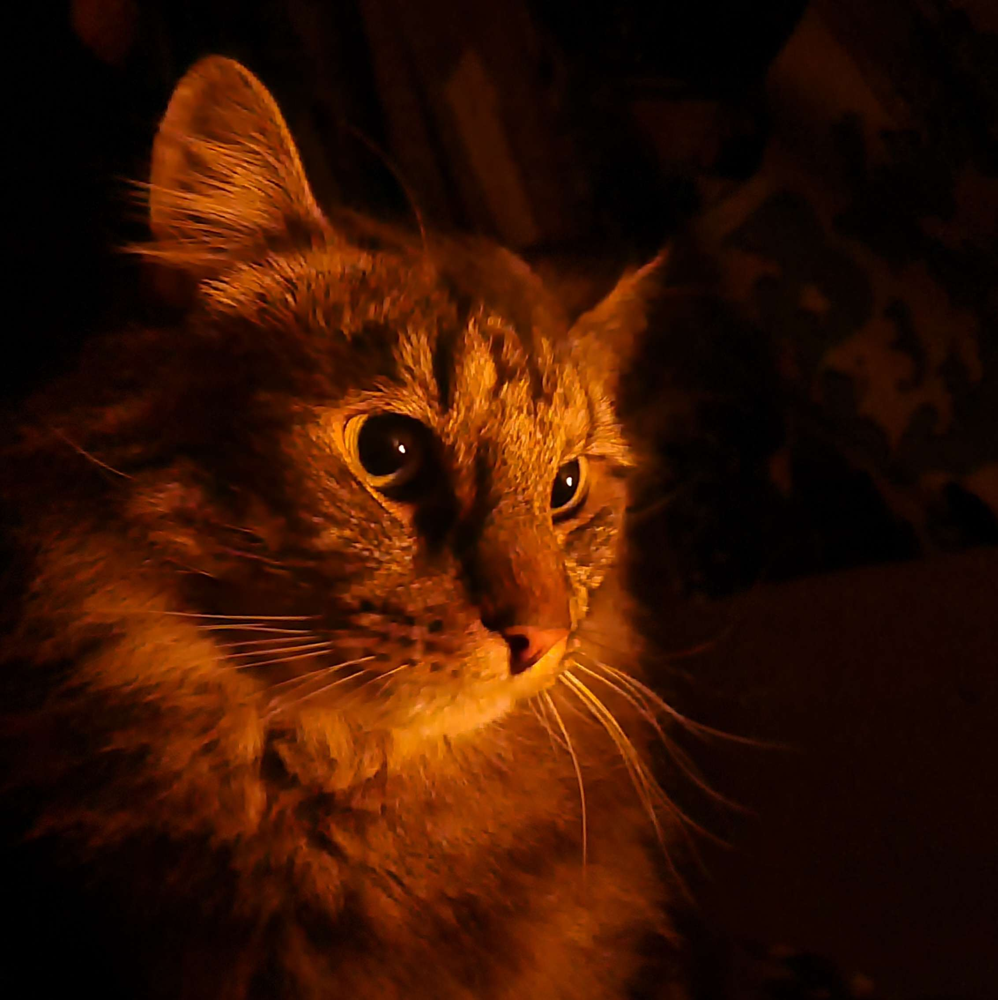
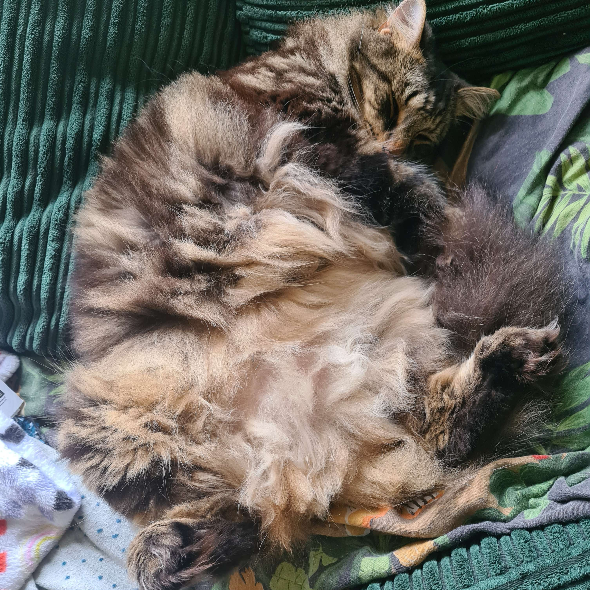
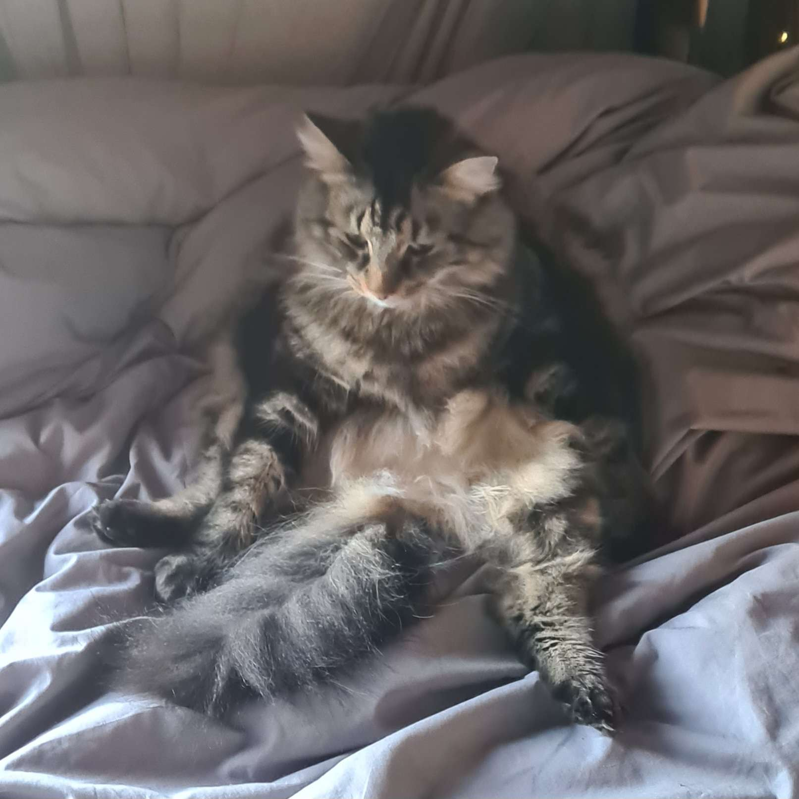

About
I'm Izzie, a 3D artist and game designer based in Birmingham UK, specialising in character design and social environments. I've been working as a self taught independent 3d artist for 4 years. My interests include building characters with high customisability and cozy social spaces. I Primarily work in blender and can cover the full character pipeline. I am skilled in box modelling, sculpting, retopology, UV Unwrapping, rigging and weight painting. I am proficient in building rigs for games. I am also skilled in creating shape keys / blendshapes for customisation and have a high level of knowledge of how to sculpt facial gestures and visemes / mouth shapes. For texturing I use Substance Painter. I am able to competently create a scene for texturing then do so using fill layers and masks, aswell as using smart materials and baking. My work tends to be stylised and semi-realistic but I am comfortable adapting to a project's visual language. In Unity I am proficient in building animation trees, using corrective blendshapes, and setting up highly customisable characters with a large variety of clothing and accessory toggles. Additionally I have a moderate knowledge of fashion, fashion history and 3d garment construction and can rig these items to bases with minimal clipping. I also have a strong understanding of anatomy and form which I use to inform my modelling and texturing work. I care about delivering work that's both visually strong and technically sound. I am able to thrive in a team based environment and will take initiative to lead when necessary, but I am also happy to take direction and work under the guidance of others. If you are interested in working together please get in touch via my external links
About (but casual)
In my free time I'm usually playing video games. My current favourites are BOTW, Factorio, Grounded, Elden Ring, Farming Simulator, Katamari, RDR2, Kenshi I enjoy watching movies and TV shows, with a particular love for Anime, Cartoons, Horror and scifi. My favourite show is currently Severance. I also have a strong interest in fashion, and enjoy following trends and experimenting with my own style. I have a particular love for alt-vintage fashion I listen to a lot of music, and enjoy listening to a wide variety of genres. My current most listened to playlists are primarily Jazz house, PSX Jungle, and liquid drum and bass. I have a cat named Simba who is a big part of my life. I enjoy spending time with him on an evening as a source of comfort.

